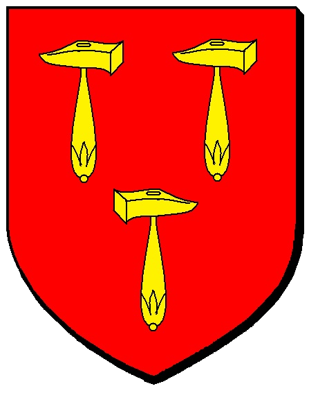
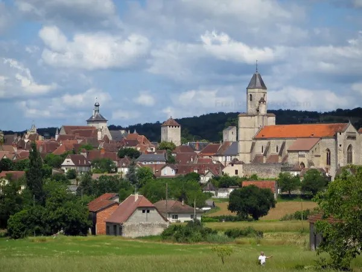

Martel la ville
aux sept tours


⟹ Ville aux sept tours ⟸

À la différence de la plupart des villes du Quercy, Martel ne doit sa naissance ni à un castrum militaire ni à une fondation religieuse, mais à un marché. Fondée au XIe siècle par les vicomtes de Turenne autour d'un marché de dispersion du sel organisé par l'abbaye Sainte-Marie de Souillac, la ville neuve s'élève au croisement d'un axe nord-sud reliant Paris à Toulouse et d'une route est-ouest empruntée par le sel de l'Atlantique et le vin d'Aquitaine.

Dès 1219, son statut de ville libre lui permet de frapper sa propre monnaie et d'échapper à certains impôts, accélérant son essor commercial. Durant plus de cinq siècles, Martel demeure la capitale de la partie quercynoise de la vicomté de Turenne, avant de devenir le siège d'une sénéchaussée royale du XVe siècle jusqu'à la Révolution. Étape appréciée des pèlerins en route vers Rocamadour, la cité prospère aussi grâce à ses nombreux artisans, symbolisés par les trois marteaux de son blason.
Le nom de la ville serait lié à une légende associant sa fondation à Charles Martel, grand-père de Charlemagne.
— Tradition locale sur l'origine du nom de MartelC'est au XVIIe siècle que la ville prend le surnom de « ville aux sept tours », en référence aux tours médiévales qui rythment encore aujourd'hui son silhouette : clocher-donjon de Saint-Maur, beffroi de la Raymondie, tour Tournemire et plusieurs tours d'angle ou de demeures fortifiées. Classée parmi les Plus Beaux Villages de France, Martel connaît une seconde période de gloire au XIXe siècle grâce au commerce de la truffe.
Repères complémentaires : les sources touristiques patrimoniales situent la fondation de Martel entre les XIe et XIIe siècles par les vicomtes de Turenne. La ville doit surtout son essor à sa position au croisement de routes commerciales empruntées par le sel de l’Atlantique et le vin d’Aquitaine. La tradition qui rapproche son nom de Charles Martel relève de la légende et non d’une filiation historique établie.
Pour approfondir la visite, le Pays d’Art et d’Histoire propose un « Parcours de Martel » d’environ 1 h 15, consacré à l’histoire urbaine et aux principaux monuments. Des visites guidées et familiales permettent également d’observer plus précisément les façades médiévales et Renaissance, les détails sculptés, les hôtels particuliers et l’organisation de l’ancienne cité marchande.
Site Remarquable du Goût, Martel est depuis toujours un carrefour gourmand du Quercy. La noix, cultivée sur le causse et pressée dans un moulin traditionnel encore en activité aux abords de la ville, y côtoie la truffe, dont le commerce fit la seconde fortune de la cité au XIXe siècle, et le foie gras de canard, vedette du marché hebdomadaire de la place des Consuls.
Marché de Martel : chaque mercredi et samedi matin, la place des Consuls s'anime autour des produits phares du Quercy — noix, truffe, foie gras et fromages de chèvre.
Le Truffadou : d'avril à début novembre, le chemin de fer touristique du Haut-Quercy propose des allers-retours en train à vapeur vers Saint-Denis-lès-Martel, à flanc de falaise.
Alentours : Rocamadour, à 20 km, le gouffre de Padirac et le belvédère de Copeyre, qui domine le cirque de Montvalent, complètent une découverte de la vallée de la Dordogne.
Meilleure période : le printemps et l'automne, ou les mercredis et samedis matin pour vivre l'ambiance du marché.
Panorama : le centre-bourg de Martel n'offre pas de vue dégagée ; c'est à quelques minutes en voiture, au belvédère de Copeyre entre Martel et Gluges, que se découvre le plus beau panorama sur la vallée.
Se loger : hôtels, chambres d'hôtes et restaurants dans la cité médiévale ; l'office de tourisme, installé au palais de la Raymondie, renseigne sur les visites guidées.
Documentation : Vallée de la Dordogne — Martel, ville aux sept tours. Cette source officielle permet de compléter la fiche avec les informations de visite et les actualisations pratiques.